MULTI-VIEW LEARNING · BUILT IN BURN
Learn what
the other views reveal.
One frozen multi-view foundation with newly trained camera-calibration and RGB reconstruction heads. An 800-update CPU study uses 32 training rooms and 8 disjoint development rooms. RGB completion reaches 21.09 dB hidden-pixel PSNR. Both heads pass bounded numerical stability and exact checkpoint replay; camera calibration still overfits and is not reliable. All figures use this foundation and one final set of attached head weights.
Research prototype. State-of-the-art performance and sharp RGB reconstruction are not established.
LEARNED OUTPUT HEADS
RGB pixels and camera calibration.
One attached head-training run on the frozen foundation. RGB completion uses sparse target features; camera prediction has its own dense RGB-pair route. Teacher pixels and camera labels are evaluation targets. Captions show hidden-pixel PSNR and angular calibration errors.
RGB head / room 2609308192, view 0
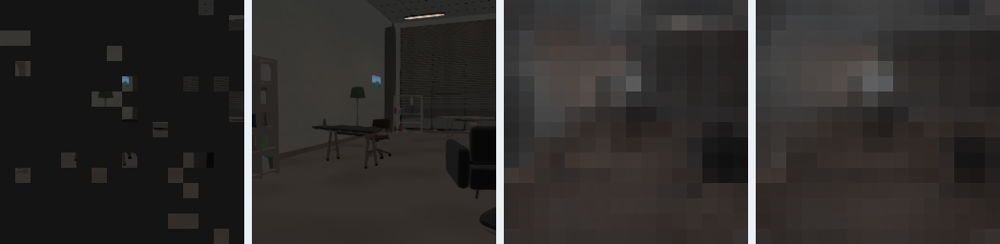
Camera head / room 2609308192, view 0
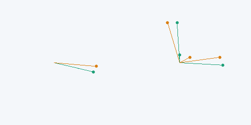
RGB head / room 2609308196, view 0
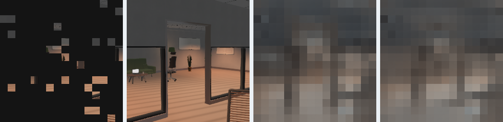
Camera head / room 2609308196, view 0
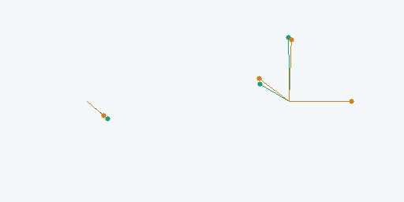
RGB head / room 2609308199, view 2
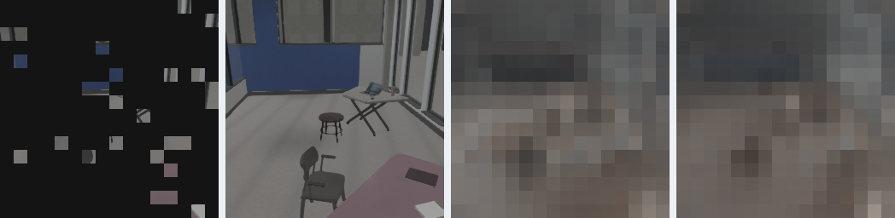
Camera head / room 2609308199, view 2
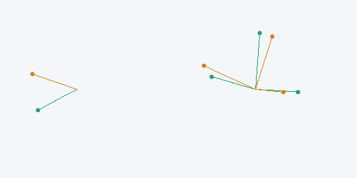
01 / CROSS-VIEW COMPLETION
Same scene.
Different information.
The model receives the sparse target and reference images. The full target and teacher features below are evaluation targets. Latent colors share a teacher-fitted projection and color scale; they do not show reconstructed RGB.
Feature signal/error 8.66 dB · MSE 0.1360 · cosine 0.929
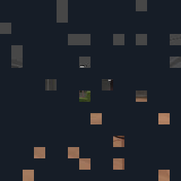
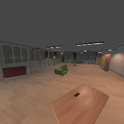
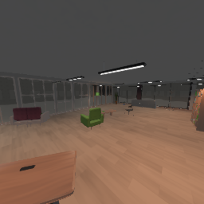
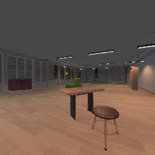
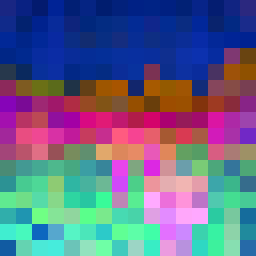
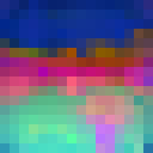
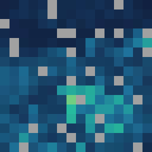
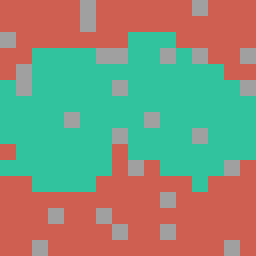
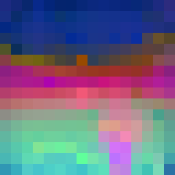
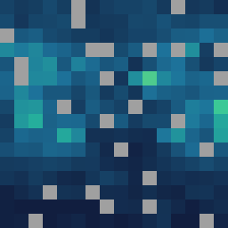
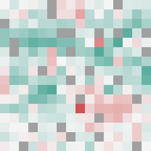
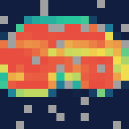
Visible in a reference Not visible Observed token / unknown labelError: 0 1+
Deterministic evenly spaced selection from the exported cohort, including its endpoints. No selection by quality. Error, RI and visibility fraction use fixed 0–1 scales. Reference benefit is (monocular MSE − cross-view MSE) / monocular MSE, displayed from −1 (red: worse) through 0 (white) to +1 (teal: better). Values outside the display range saturate. RI uses the full target and is a regression score, not a calibrated visibility probability. The complete population, selection and projection are downloadable.
How to read this result
Compare the teacher and predicted latent patterns using their common colors. Lost variation indicates oversmoothing in representation space. Compare the sparse input with both references to judge how much shared structure is available. The displayed co-visibility labels score these evaluation images after prediction. Any use of training-room geometry is declared separately in the experiment architecture; geometry is never a model input.
GEOMETRIC CORRESPONDENCE
Where do the features match?
Each caption identifies its protocol and colors. Matching panels show ground-truth locations after inference; camera-motion panels show predicted matches and solver inliers. An inlier is not necessarily a correct match. All examples use this checkpoint.
hpatches / v_abstract_2
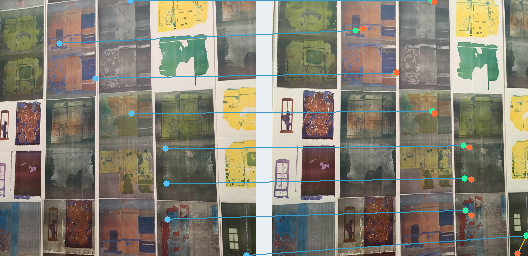
hpatches / v_gardens_4
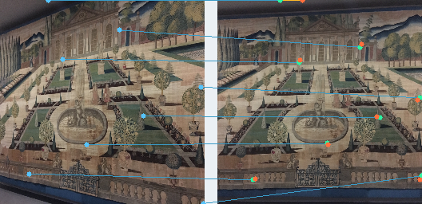
hpatches / v_yuri_6
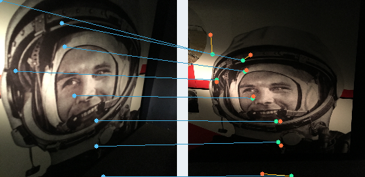
eth3d / delivery_area-11-0000
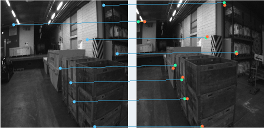
eth3d / playground-7-0015
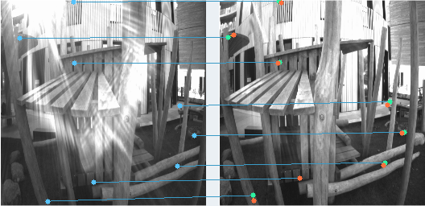
eth3d / tunnel-9-0068
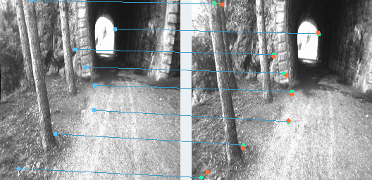
Actual camera views / room 2609308192
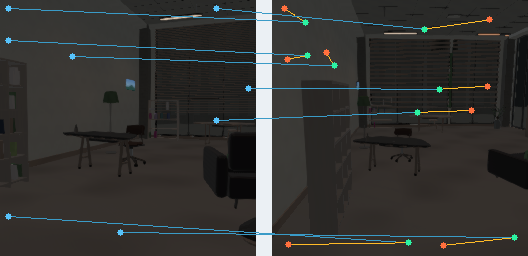
Actual camera views / room 2609308193
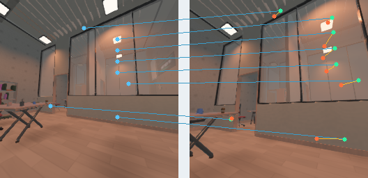
Actual camera views / room 2609308194
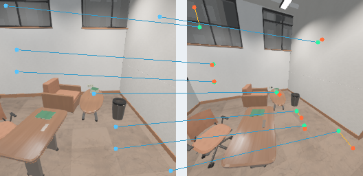
Actual camera views / room 2609308195
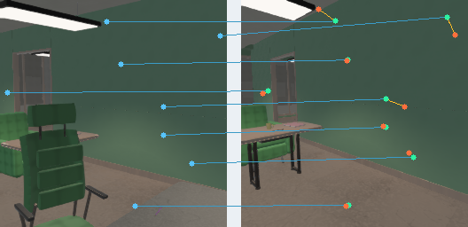
TUM camera motion / long_office_household-000081-000096
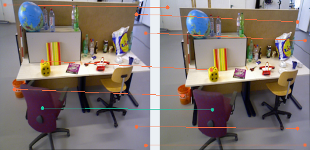
TUM camera motion / long_office_household-001302-001362
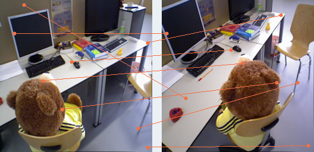
TUM camera motion / long_office_household-002524-002584
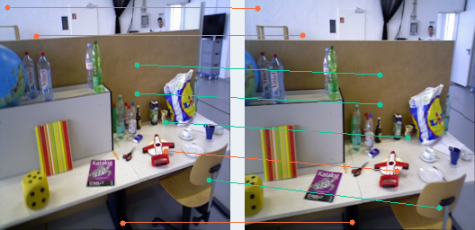
TUM camera motion / structure_texture_far-000028-000043
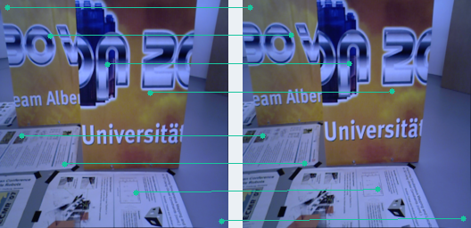
TUM camera motion / structure_texture_far-000452-000512
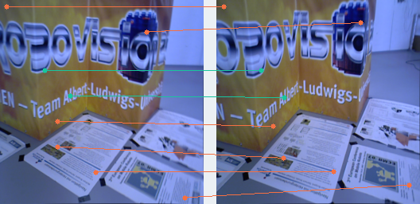
TUM camera motion / structure_texture_far-000877-000937
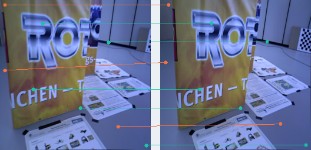
TUM camera motion / structure_texture_near-000033-000048
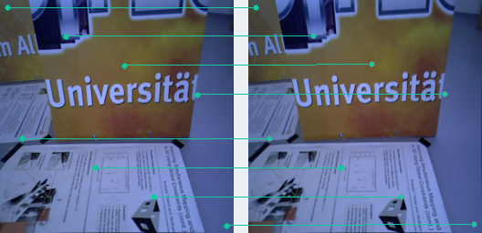
TUM camera motion / structure_texture_near-000535-000595
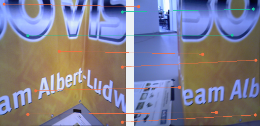
TUM camera motion / structure_texture_near-001038-001098
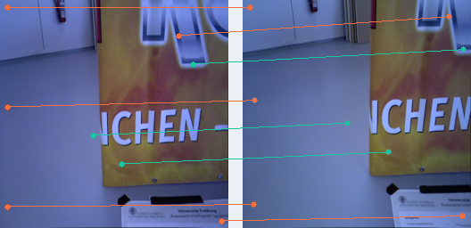
Training diagnostic: first versus last 32-update mean correspondence NLL was 1.576 → 1.501 for pair conditioning and 1.644 → 1.556 for same-image conditioning. These changing minibatches are descriptive convergence evidence; external transfer is evaluated separately.
Renderer-supervised correspondence is a training-only auxiliary (weight 0.1, temperature 0.07). First versus last 32-update mean NLL: 2.768 to 2.419 nats; usable query fraction: 46.5% to 47.1%. These are changing-minibatch diagnostics. Geometry and camera labels are absent from RGB inference.
Final encoder features are anchored to a pinned frozen ancestor with loss weight 4.0. Training feature RMS drift is 6.86% in the first and 8.44% in the last 32-update window (100 times the square root of mean per-image, energy-normalized feature MSE, equally weighted over sparse/full target and reference routes). Intermediate geometric features have no direct preservation target. This is a training regularization diagnostic, not RGB error or independent accuracy. The frozen anchor is absent from inference.
02 / MEASURED CAPABILITIES
Every head has an evidence status.
All measurements below bind to checkpoint 0639afa2e19d0e7a. Blank capabilities remain explicit until their heads are trained and evaluated. Benchmark readouts use their declared coordinate systems; numbers from different protocols are not interchangeable.
How to read the numbers
- Calibrated camera-motion probe
- A CPU geometric solver estimates motion from the model's matches and known intrinsics. Rotation and signed translation-direction errors use degrees; lower is better. Pose error is the larger angle. Pose AUC summarizes recall up to its angular threshold, displayed as a percentage; higher is better. Failed fits count as 180 degrees. Solver success means an estimate was returned, not that it was correct. This is separate from learned camera or focal-length prediction.
- Feature signal / error (dB)
- 10 log10(mean squared teacher feature / prediction MSE), measured on hidden patches and averaged over target views. Higher is better; +3.01 dB means half the error at the same signal power. It is not RGB PSNR and has no universal image-quality threshold.
- RGB PSNR (dB)
- 10 log10(RGB data range squared / RGB MSE). Reported only for an evaluated RGB decoder with a declared range, color space and mask. Colored feature plots cannot be scored as reconstructed images.
- Feature MSE and cosine
- MSE is mean squared feature error: zero is exact. Cosine measures feature-direction agreement: one is perfect alignment. A high cosine can coexist with lost spatial detail, so also inspect the variation ratio and shared-color feature maps.
- Reference benefit (%)
- 100 times (1 - cross-view MSE / references-disabled MSE), using population means from the same checkpoint and targets. Positive means the reference images reduce error. Negative means they hurt.
- Spatial variation retained (%)
- Predicted spatial feature variance divided by teacher variance. 100% matches the teacher's amount of variation; lower values indicate smoothing. More than 100% is not automatically better, and matched variance does not prove correct structure.
- Mean match error (pixels)
- AEPE: average distance between a predicted correspondence and its true position. Lower is better. HPatches uses the declared 240 by 240 scoring frame; ETH3D uses original image pixels. Neither is measured in the displayed thumbnail's pixels.
- Within 3 pixels (%)
- PCK3: percentage of labeled matches whose error is at most three pixels in the declared scoring frame. Higher is better; 100% is perfect. A gain of 1 percentage point means one additional match per hundred after the stated macro weighting.
- Co-visibility ranking
- AUROC compares visible and non-visible patches: 0.5 is chance and 1 is perfect. Average precision (AP) also depends on how many patches are visible, so read it alongside the positive-label fraction. These are ranking measures, not calibrated probabilities.
- Known-transform loss (nats)
- Negative log likelihood of the soft correspondence targets, using natural logarithms. Lower is better. Its scale depends on the grid, temperature and label distribution; compare it only within that fixed objective.
- Camera and future heads
- Rotation and translation-direction errors are angles in degrees (lower is better). Focal-length relative error can be shown as a percentage. Pose AUC reports accuracy over an angular threshold range. No camera, depth or RGB capability is claimed until that head is trained and evaluated.
Verified training stages: 384 updates with full encoder trainable (steps 1-384). Logged encoder gradient counts are checked against each stage. These counts describe optimization, not evidence of improved transfer.
Learned camera calibration head
EvaluatedHead weights trained from scratch on a frozen foundation; Bevy anchor camera: +X right, +Y up, -Z forward; R maps target axes into reference axes; translation is reference-to-target direction in reference axes. Six-dimensional rotation columns, signed unit-baseline regression, log-positive focal lengths. No supplied calibration enters inference.
| Metric | Value | Unit / population |
|---|---|---|
| Relative rotation error | 11.64 | degrees · n = 24equal target views, all declared validation rooms; RGB scores use hidden sRGB pixels only |
| Focal length relative error | 44.35 | % · n = 24equal target views, all declared validation rooms; RGB scores use hidden sRGB pixels only |
| Signed translation-direction error | 32.68 | degrees · n = 24equal target views, all declared validation rooms; RGB scores use hidden sRGB pixels only |
| Pose AUC at 10 degrees | 3.18 | % · n = 24equal target views, all declared validation rooms; RGB scores use hidden sRGB pixels only |
8 development rooms, 24 target/reference pairs; one training seed. Dense RGB pair input, independent from sparse completion. Principal point fixed at the image center; translation scale is not predicted. 0 invalid rotations; 0 focal clamps.
Training-label constant control: rotation 13.54 degrees, translation 85.29 degrees, focal error 45.64%. Stable regression alone does not prove useful camera estimation.
Learned RGB reconstruction head
EvaluatedOne trained 16x16 patch decoder shared by cross-view and references-disabled latent predictions. sRGB [0,1], data range 1, only originally hidden pixels scored; PSNR computed per view then averaged. Ground-truth pixels are never pasted into scored predictions.
| Metric | Value | Unit / population |
|---|---|---|
| Hidden-pixel RGB PSNR | 21.09 | dB · n = 24equal target views, all declared validation rooms; RGB scores use hidden sRGB pixels only |
| References-disabled RGB PSNR | 20.70 | dB · n = 24equal target views, all declared validation rooms; RGB scores use hidden sRGB pixels only |
| Hidden-pixel RGB MSE | 0.0089 | squared sRGB units · n = 24equal target views, all declared validation rooms; RGB scores use hidden sRGB pixels only |
8 development rooms; fixed foundation and one head-training seed. This small head study does not establish sharp completion or real-scene transfer. Colored latent maps elsewhere remain feature visualizations.
Camera and RGB training stability
EvaluatedPASSED: fixed schedule, independent optimizers, warmup, global gradient clipping at 1 per head, finite-value checks and saved-weight replay. Failed gates: []. Final checkpoint only; no validation selection.
| Metric | Value | Unit / population |
|---|---|---|
| Maximum camera gradient norm before clipping | 4.1301 | L2 norm · n = 800maximum before per-head global clipping over logged optimizer updates |
| Maximum RGB gradient norm before clipping | 0.0545 | L2 norm · n = 800maximum before per-head global clipping over logged optimizer updates |
Frozen-feature CPU phase: 800 updates in 64.7 seconds. Initial/final validation RGB PSNR 13.46/21.09 dB; camera regression loss 0.6206/0.3874. This verifies bounded optimization, not full encoder/fusion joint-training stability.
Cross-view latent completion
Evaluateddevelopment; hidden tokens only, fixed V-JEPA 2.1 teacher, equal target-view weighting
| Metric | Value | Unit / population |
|---|---|---|
| Feature signal / error (higher is better) | 7.38 | dB · n = 512mean target-view 10 log10(masked teacher squared amplitude / prediction MSE); not RGB PSNR |
| Error reduction from reference views | 7.18 | % · n = 5121 minus cross-view mean MSE / references-disabled mean MSE; positive is better |
| Hidden-token MSE | 0.1843 | squared normalized feature units · n = 512mean over hidden tokens, channels, then target views |
| Hidden-token cosine | 0.9026 | cosine · n = 512mean over hidden tokens then target views |
| Teacher spatial variation retained (100% is reference) | 43.56 | % · n = 512mean target-view variance ratio; 1 is teacher variance, larger is not always better |
Feature colors visualize latent space; they are not RGB reconstructions.
Information-use controls
EvaluatedSame checkpoint and masked targets as completion; only available reference information changes. Compare these MSE values with cross-view completion above.
| Metric | Value | Unit / population |
|---|---|---|
| References disabled | 0.1986 | MSE · n = 512same masked targets; equal target-view weighting |
| Reference positions shuffled | 0.1940 | MSE · n = 512same masked targets; equal target-view weighting |
| Unrelated reference room | 0.2420 | MSE · n = 512same masked targets; equal target-view weighting |
| Training-set mean at each position | 0.3084 | MSE · n = 512same masked targets; equal target-view weighting |
Controls measure information use within this experiment; they are not separately trained model versions.
Completion by reference visibility
EvaluatedPost-hoc descriptive breakdown using geometry loaded after inference. Counts are hidden patches; errors are token-weighted, unlike the primary equal-view aggregate.
| Metric | Value | Unit / population |
|---|---|---|
| Majority not visible: feature MSE | 0.1960 | MSE · n = 26243hidden patches pooled across target views; unknown labels excluded |
| Majority visible in references: feature MSE | 0.1809 | MSE · n = 91472hidden patches pooled across target views; unknown labels excluded |
A binary majority label does not mean every pixel in the patch is visible or occluded. This is a diagnostic, not a registered acceptance gate or a causal explanation of smoothing.
Co-visibility
Evaluatedhidden patches only; at least 128 known pixels; majority visible in any reference; ties counted visible; these evaluation co-visibility labels never supervise training. Separate training-room patch-center correspondences supervise the renderer auxiliary; they use a different labeling policy and no evaluation rooms. Geometry is never a model input.
| Metric | Value | Unit / population |
|---|---|---|
| RI AUROC | 0.7382 | AUROC · n = 117715pooled known hidden patches; exact score ties grouped |
| RI average precision | 0.9074 | AP · n = 117715pooled known hidden patches |
RI uses a separate full-target branch; it is not sparse completion.
Positive prevalence 77.7%; AP depends on this prevalence.
HPatches correspondence
Evaluateddevelopment; HP-240; pair then sequence means; primary viewpoint subset; patch-grid displacement
| Metric | Value | Unit / population |
|---|---|---|
| Pair-conditioned descriptor · Mean match error | 15.67 | pixels · n = 295HP-240; pair then sequence means; primary viewpoint subset; patch-grid displacement |
| Pair-conditioned descriptor · Within 3 pixels | 15.53 | % · n = 295HP-240; pair then sequence means; primary viewpoint subset; patch-grid displacement |
| Pair-conditioned descriptor + local refinement · Mean match error | 14.84 | pixels · n = 295HP-240; pair then sequence means; primary viewpoint subset; patch-grid displacement |
| Pair-conditioned descriptor + local refinement · Within 3 pixels | 26.23 | % · n = 295HP-240; pair then sequence means; primary viewpoint subset; patch-grid displacement |
| Same-image conditioned control · Mean match error | 19.58 | pixels · n = 295HP-240; pair then sequence means; primary viewpoint subset; patch-grid displacement |
| Same-image conditioned control · Within 3 pixels | 13.42 | % · n = 295HP-240; pair then sequence means; primary viewpoint subset; patch-grid displacement |
| Same-image conditioned control + local refinement · Mean match error | 18.90 | pixels · n = 295HP-240; pair then sequence means; primary viewpoint subset; patch-grid displacement |
| Same-image conditioned control + local refinement · Within 3 pixels | 21.29 | % · n = 295HP-240; pair then sequence means; primary viewpoint subset; patch-grid displacement |
| Encoder block 6 control · Mean match error | 19.98 | pixels · n = 295HP-240; pair then sequence means; primary viewpoint subset; patch-grid displacement |
| Encoder block 6 control · Within 3 pixels | 13.39 | % · n = 295HP-240; pair then sequence means; primary viewpoint subset; patch-grid displacement |
| Encoder block 6 control + local refinement · Mean match error | 19.33 | pixels · n = 295HP-240; pair then sequence means; primary viewpoint subset; patch-grid displacement |
| Encoder block 6 control + local refinement · Within 3 pixels | 20.33 | % · n = 295HP-240; pair then sequence means; primary viewpoint subset; patch-grid displacement |
Local patch-grid readouts; optional 3x3 refinement is declared per method. No parity with published refinement or SOTA claim.
Pair-conditioned descriptor: AEPE 95% cluster interval [13.043, 18.740] pixels over 59 sequence clusters; 10,000 deterministic bootstrap replicates.
Pair-conditioned descriptor + local refinement: AEPE 95% cluster interval [12.190, 17.942] pixels over 59 sequence clusters; 10,000 deterministic bootstrap replicates.
Same-image conditioned control: AEPE 95% cluster interval [16.759, 22.916] pixels over 59 sequence clusters; 10,000 deterministic bootstrap replicates.
Same-image conditioned control + local refinement: AEPE 95% cluster interval [16.042, 22.261] pixels over 59 sequence clusters; 10,000 deterministic bootstrap replicates.
Encoder block 6 control: AEPE 95% cluster interval [17.363, 23.008] pixels over 59 sequence clusters; 10,000 deterministic bootstrap replicates.
Encoder block 6 control + local refinement: AEPE 95% cluster interval [16.682, 22.372] pixels over 59 sequence clusters; 10,000 deterministic bootstrap replicates.
hpatches: paired readout gate — PASS
EvaluatedPair-conditioned descriptor relative to Encoder block 6 control; Positive favors candidate: control minus candidate AEPE, candidate minus control PCK3. Pair means, then equal groups within each scene/sequence, then cluster bootstrap. One checkpoint; no training-seed uncertainty.
| Metric | Value | Unit / population |
|---|---|---|
| Mean pixel error reduction | 4.31 | pixels · n = 295paired scene/sequence means |
| Accuracy gain at 3 pixels | 2.1369 | percentage points · n = 295paired scene/sequence means |
Paired 95% AEPE-gain interval [3.7844, 4.8579] pixels; PCK3-gain interval [1.831, 2.444] percentage points. 59 clusters, 10,000 deterministic draws.
Fusion transfer gate passes: the pixel-error reduction interval must be entirely positive and mean within-3-pixel accuracy must not decrease. This is not an equivalence test or evidence of general SOTA performance.
hpatches: paired readout gate — PASS
EvaluatedPair-conditioned descriptor relative to Same-image conditioned control; Positive favors candidate: control minus candidate AEPE, candidate minus control PCK3. Pair means, then equal groups within each scene/sequence, then cluster bootstrap. One checkpoint; no training-seed uncertainty.
| Metric | Value | Unit / population |
|---|---|---|
| Mean pixel error reduction | 3.91 | pixels · n = 295paired scene/sequence means |
| Accuracy gain at 3 pixels | 2.1120 | percentage points · n = 295paired scene/sequence means |
Paired 95% AEPE-gain interval [3.2984, 4.5906] pixels; PCK3-gain interval [1.821, 2.413] percentage points. 59 clusters, 10,000 deterministic draws.
Fusion transfer gate passes: the pixel-error reduction interval must be entirely positive and mean within-3-pixel accuracy must not decrease. This is not an equivalence test or evidence of general SOTA performance.
hpatches: paired readout gate — PASS
EvaluatedPair-conditioned descriptor + local refinement relative to Encoder block 6 control + local refinement; Positive favors candidate: control minus candidate AEPE, candidate minus control PCK3. Pair means, then equal groups within each scene/sequence, then cluster bootstrap. One checkpoint; no training-seed uncertainty.
| Metric | Value | Unit / population |
|---|---|---|
| Mean pixel error reduction | 4.49 | pixels · n = 295paired scene/sequence means |
| Accuracy gain at 3 pixels | 5.9061 | percentage points · n = 295paired scene/sequence means |
Paired 95% AEPE-gain interval [3.9566, 5.0364] pixels; PCK3-gain interval [5.280, 6.564] percentage points. 59 clusters, 10,000 deterministic draws.
Fusion transfer gate passes: the pixel-error reduction interval must be entirely positive and mean within-3-pixel accuracy must not decrease. This is not an equivalence test or evidence of general SOTA performance.
hpatches: paired readout gate — PASS
EvaluatedPair-conditioned descriptor + local refinement relative to Same-image conditioned control + local refinement; Positive favors candidate: control minus candidate AEPE, candidate minus control PCK3. Pair means, then equal groups within each scene/sequence, then cluster bootstrap. One checkpoint; no training-seed uncertainty.
| Metric | Value | Unit / population |
|---|---|---|
| Mean pixel error reduction | 4.06 | pixels · n = 295paired scene/sequence means |
| Accuracy gain at 3 pixels | 4.9392 | percentage points · n = 295paired scene/sequence means |
Paired 95% AEPE-gain interval [3.4311, 4.7396] pixels; PCK3-gain interval [4.363, 5.549] percentage points. 59 clusters, 10,000 deterministic draws.
Fusion transfer gate passes: the pixel-error reduction interval must be entirely positive and mean within-3-pixel accuracy must not decrease. This is not an equivalence test or evidence of general SOTA performance.
hpatches: paired readout gate — PASS
EvaluatedPair-conditioned descriptor + local refinement relative to Pair-conditioned descriptor; Positive favors candidate: control minus candidate AEPE, candidate minus control PCK3. Pair means, then equal groups within each scene/sequence, then cluster bootstrap. One checkpoint; no training-seed uncertainty.
| Metric | Value | Unit / population |
|---|---|---|
| Mean pixel error reduction | 0.83 | pixels · n = 295paired scene/sequence means |
| Accuracy gain at 3 pixels | 10.7054 | percentage points · n = 295paired scene/sequence means |
Paired 95% AEPE-gain interval [0.7636, 0.8993] pixels; PCK3-gain interval [9.489, 12.042] percentage points. 59 clusters, 10,000 deterministic draws.
Local precision gate passes: the within-3-pixel gain interval must be entirely positive and mean pixel error must not increase. This is not an equivalence test or evidence of general SOTA performance.
ETH3D correspondence
Evaluateddevelopment; original pixels; pair then scene then interval means; patch-grid displacement
| Metric | Value | Unit / population |
|---|---|---|
| Pair-conditioned descriptor · Mean match error | 27.20 | pixels · n = 3365original pixels; pair then scene then interval means; patch-grid displacement |
| Pair-conditioned descriptor · Within 3 pixels | 2.34 | % · n = 3365original pixels; pair then scene then interval means; patch-grid displacement |
| Pair-conditioned descriptor + local refinement · Mean match error | 23.81 | pixels · n = 3365original pixels; pair then scene then interval means; patch-grid displacement |
| Pair-conditioned descriptor + local refinement · Within 3 pixels | 5.68 | % · n = 3365original pixels; pair then scene then interval means; patch-grid displacement |
| Same-image conditioned control · Mean match error | 34.28 | pixels · n = 3365original pixels; pair then scene then interval means; patch-grid displacement |
| Same-image conditioned control · Within 3 pixels | 2.19 | % · n = 3365original pixels; pair then scene then interval means; patch-grid displacement |
| Same-image conditioned control + local refinement · Mean match error | 31.52 | pixels · n = 3365original pixels; pair then scene then interval means; patch-grid displacement |
| Same-image conditioned control + local refinement · Within 3 pixels | 4.65 | % · n = 3365original pixels; pair then scene then interval means; patch-grid displacement |
| Encoder block 6 control · Mean match error | 32.96 | pixels · n = 3365original pixels; pair then scene then interval means; patch-grid displacement |
| Encoder block 6 control · Within 3 pixels | 2.30 | % · n = 3365original pixels; pair then scene then interval means; patch-grid displacement |
| Encoder block 6 control + local refinement · Mean match error | 30.57 | pixels · n = 3365original pixels; pair then scene then interval means; patch-grid displacement |
| Encoder block 6 control + local refinement · Within 3 pixels | 4.30 | % · n = 3365original pixels; pair then scene then interval means; patch-grid displacement |
Local patch-grid readouts; optional 3x3 refinement is declared per method. No parity with published refinement or SOTA claim.
Pair-conditioned descriptor: AEPE 95% cluster interval [22.922, 31.869] pixels over 10 scene clusters; 10,000 deterministic bootstrap replicates.
Pair-conditioned descriptor + local refinement: AEPE 95% cluster interval [19.209, 28.804] pixels over 10 scene clusters; 10,000 deterministic bootstrap replicates.
Same-image conditioned control: AEPE 95% cluster interval [29.145, 39.384] pixels over 10 scene clusters; 10,000 deterministic bootstrap replicates.
Same-image conditioned control + local refinement: AEPE 95% cluster interval [26.177, 36.783] pixels over 10 scene clusters; 10,000 deterministic bootstrap replicates.
Encoder block 6 control: AEPE 95% cluster interval [28.351, 37.521] pixels over 10 scene clusters; 10,000 deterministic bootstrap replicates.
Encoder block 6 control + local refinement: AEPE 95% cluster interval [25.862, 35.253] pixels over 10 scene clusters; 10,000 deterministic bootstrap replicates.
eth3d: paired readout gate — PASS
EvaluatedPair-conditioned descriptor relative to Encoder block 6 control; Positive favors candidate: control minus candidate AEPE, candidate minus control PCK3. Pair means, then equal groups within each scene/sequence, then cluster bootstrap. One checkpoint; no training-seed uncertainty.
| Metric | Value | Unit / population |
|---|---|---|
| Mean pixel error reduction | 5.76 | pixels · n = 3365paired scene/sequence means |
| Accuracy gain at 3 pixels | 0.0375 | percentage points · n = 3365paired scene/sequence means |
Paired 95% AEPE-gain interval [4.3991, 7.3494] pixels; PCK3-gain interval [-0.008, 0.074] percentage points. 10 clusters, 10,000 deterministic draws.
Fusion transfer gate passes: the pixel-error reduction interval must be entirely positive and mean within-3-pixel accuracy must not decrease. This is not an equivalence test or evidence of general SOTA performance.
eth3d: paired readout gate — PASS
EvaluatedPair-conditioned descriptor relative to Same-image conditioned control; Positive favors candidate: control minus candidate AEPE, candidate minus control PCK3. Pair means, then equal groups within each scene/sequence, then cluster bootstrap. One checkpoint; no training-seed uncertainty.
| Metric | Value | Unit / population |
|---|---|---|
| Mean pixel error reduction | 7.08 | pixels · n = 3365paired scene/sequence means |
| Accuracy gain at 3 pixels | 0.1497 | percentage points · n = 3365paired scene/sequence means |
Paired 95% AEPE-gain interval [4.8046, 9.8022] pixels; PCK3-gain interval [0.106, 0.197] percentage points. 10 clusters, 10,000 deterministic draws.
Fusion transfer gate passes: the pixel-error reduction interval must be entirely positive and mean within-3-pixel accuracy must not decrease. This is not an equivalence test or evidence of general SOTA performance.
eth3d: paired readout gate — PASS
EvaluatedPair-conditioned descriptor + local refinement relative to Encoder block 6 control + local refinement; Positive favors candidate: control minus candidate AEPE, candidate minus control PCK3. Pair means, then equal groups within each scene/sequence, then cluster bootstrap. One checkpoint; no training-seed uncertainty.
| Metric | Value | Unit / population |
|---|---|---|
| Mean pixel error reduction | 6.76 | pixels · n = 3365paired scene/sequence means |
| Accuracy gain at 3 pixels | 1.3807 | percentage points · n = 3365paired scene/sequence means |
Paired 95% AEPE-gain interval [5.3285, 8.4300] pixels; PCK3-gain interval [1.085, 1.696] percentage points. 10 clusters, 10,000 deterministic draws.
Fusion transfer gate passes: the pixel-error reduction interval must be entirely positive and mean within-3-pixel accuracy must not decrease. This is not an equivalence test or evidence of general SOTA performance.
eth3d: paired readout gate — PASS
EvaluatedPair-conditioned descriptor + local refinement relative to Same-image conditioned control + local refinement; Positive favors candidate: control minus candidate AEPE, candidate minus control PCK3. Pair means, then equal groups within each scene/sequence, then cluster bootstrap. One checkpoint; no training-seed uncertainty.
| Metric | Value | Unit / population |
|---|---|---|
| Mean pixel error reduction | 7.71 | pixels · n = 3365paired scene/sequence means |
| Accuracy gain at 3 pixels | 1.0377 | percentage points · n = 3365paired scene/sequence means |
Paired 95% AEPE-gain interval [5.3247, 10.5373] pixels; PCK3-gain interval [0.786, 1.293] percentage points. 10 clusters, 10,000 deterministic draws.
Fusion transfer gate passes: the pixel-error reduction interval must be entirely positive and mean within-3-pixel accuracy must not decrease. This is not an equivalence test or evidence of general SOTA performance.
eth3d: paired readout gate — PASS
EvaluatedPair-conditioned descriptor + local refinement relative to Pair-conditioned descriptor; Positive favors candidate: control minus candidate AEPE, candidate minus control PCK3. Pair means, then equal groups within each scene/sequence, then cluster bootstrap. One checkpoint; no training-seed uncertainty.
| Metric | Value | Unit / population |
|---|---|---|
| Mean pixel error reduction | 3.39 | pixels · n = 3365paired scene/sequence means |
| Accuracy gain at 3 pixels | 3.3444 | percentage points · n = 3365paired scene/sequence means |
Paired 95% AEPE-gain interval [2.9974, 3.7744] pixels; PCK3-gain interval [2.806, 3.998] percentage points. 10 clusters, 10,000 deterministic draws.
Local precision gate passes: the within-3-pixel gain interval must be entirely positive and mean pixel error must not increase. This is not an equivalence test or evidence of general SOTA performance.
Synthetic camera-view matching
EvaluatedFixed validation rooms, view 0 versus view 1, both directions. RGB-only predictions; renderer depth and camera labels enter scoring only. Pair, same-image and encoder controls share the query population.
| Metric | Value | Unit / population |
|---|---|---|
| Centered encoder control / AEPE | 20.30 | pixels · n = 32equal room and direction weight |
| Centered encoder control / PCK8 | 34.26 | % · n = 32equal room and direction weight |
| Centered encoder control / PCK16 | 63.32 | % · n = 32equal room and direction weight |
| Centered encoder control + local refinement / AEPE | 18.81 | pixels · n = 32equal room and direction weight |
| Centered encoder control + local refinement / PCK8 | 41.98 | % · n = 32equal room and direction weight |
| Centered encoder control + local refinement / PCK16 | 67.20 | % · n = 32equal room and direction weight |
| Pair-conditioned descriptor / AEPE | 14.24 | pixels · n = 32equal room and direction weight |
| Pair-conditioned descriptor / PCK8 | 43.97 | % · n = 32equal room and direction weight |
| Pair-conditioned descriptor / PCK16 | 76.75 | % · n = 32equal room and direction weight |
| Pair-conditioned descriptor + local refinement / AEPE | 12.18 | pixels · n = 32equal room and direction weight |
| Pair-conditioned descriptor + local refinement / PCK8 | 58.72 | % · n = 32equal room and direction weight |
| Pair-conditioned descriptor + local refinement / PCK16 | 80.21 | % · n = 32equal room and direction weight |
| Same-image conditioned control / AEPE | 19.56 | pixels · n = 32equal room and direction weight |
| Same-image conditioned control / PCK8 | 36.49 | % · n = 32equal room and direction weight |
| Same-image conditioned control / PCK16 | 65.61 | % · n = 32equal room and direction weight |
| Same-image conditioned control + local refinement / AEPE | 17.83 | pixels · n = 32equal room and direction weight |
| Same-image conditioned control + local refinement / PCK8 | 46.01 | % · n = 32equal room and direction weight |
| Same-image conditioned control + local refinement / PCK16 | 69.84 | % · n = 32equal room and direction weight |
This is synthetic development evaluation. Training may use renderer-supervised correspondence labels; external real-image transfer is reported separately. Unknown, occluded, out-of-frame and grid-border queries are excluded under the pinned policy.
Calibrated motion / Pair-conditioned descriptor + local refinement
EvaluatedEvaluation role: development. TUM Freiburg 3 calibrated relative-motion diagnostic. RGB-only 256px model, fixed local centroid and mutual matches; known intrinsics supplied only to deterministic CPU eight-point essential RANSAC. Equal pair weight within sequence, then equal sequences. Failed fits contribute 180 degrees; ground-truth baselines below 1 cm excluded from translation/pose only. Not a learned camera head or official SLAM/relative-pose protocol.
| Metric | Value | Unit / population |
|---|---|---|
| Solver success | 98.92 | % · n = 186equal pairs within each sequence, then equal sequences; failed fits count as 180 degrees |
| Mean rotation error | 7.78 | degrees · n = 186equal pairs within each sequence, then equal sequences; failed fits count as 180 degrees |
| Mean signed translation-direction error | 52.80 | degrees · n = 185equal pairs within each sequence, then equal sequences; failed fits count as 180 degrees |
| Pose AUC at 5 degrees | 1.54 | % · n = 185equal pairs within each sequence, then equal sequences; failed fits count as 180 degrees |
| Pose AUC at 10 degrees | 7.65 | % · n = 185equal pairs within each sequence, then equal sequences; failed fits count as 180 degrees |
| Pose AUC at 20 degrees | 18.86 | % · n = 185equal pairs within each sequence, then equal sequences; failed fits count as 180 degrees |
| Poses within 10 degrees | 21.10 | % · n = 185equal pairs within each sequence, then equal sequences; failed fits count as 180 degrees |
Known RGB intrinsics enter a CPU eight-point RANSAC solver after RGB-only model inference. This is not a trained camera head or predicted calibration.
Three sequences in one TUM environment; no official relative-pose benchmark parity or broad generalization claim. Failure counts and low-baseline exclusions remain explicit.
Calibrated motion / Same-image conditioned control + local refinement
EvaluatedEvaluation role: development. TUM Freiburg 3 calibrated relative-motion diagnostic. RGB-only 256px model, fixed local centroid and mutual matches; known intrinsics supplied only to deterministic CPU eight-point essential RANSAC. Equal pair weight within sequence, then equal sequences. Failed fits contribute 180 degrees; ground-truth baselines below 1 cm excluded from translation/pose only. Not a learned camera head or official SLAM/relative-pose protocol.
| Metric | Value | Unit / population |
|---|---|---|
| Solver success | 98.39 | % · n = 186equal pairs within each sequence, then equal sequences; failed fits count as 180 degrees |
| Mean rotation error | 9.50 | degrees · n = 186equal pairs within each sequence, then equal sequences; failed fits count as 180 degrees |
| Mean signed translation-direction error | 55.15 | degrees · n = 185equal pairs within each sequence, then equal sequences; failed fits count as 180 degrees |
| Pose AUC at 5 degrees | 1.79 | % · n = 185equal pairs within each sequence, then equal sequences; failed fits count as 180 degrees |
| Pose AUC at 10 degrees | 6.54 | % · n = 185equal pairs within each sequence, then equal sequences; failed fits count as 180 degrees |
| Pose AUC at 20 degrees | 18.16 | % · n = 185equal pairs within each sequence, then equal sequences; failed fits count as 180 degrees |
| Poses within 10 degrees | 17.35 | % · n = 185equal pairs within each sequence, then equal sequences; failed fits count as 180 degrees |
Known RGB intrinsics enter a CPU eight-point RANSAC solver after RGB-only model inference. This is not a trained camera head or predicted calibration.
Three sequences in one TUM environment; no official relative-pose benchmark parity or broad generalization claim. Failure counts and low-baseline exclusions remain explicit.
Calibrated motion / Encoder block 6 control + local refinement
EvaluatedEvaluation role: development. TUM Freiburg 3 calibrated relative-motion diagnostic. RGB-only 256px model, fixed local centroid and mutual matches; known intrinsics supplied only to deterministic CPU eight-point essential RANSAC. Equal pair weight within sequence, then equal sequences. Failed fits contribute 180 degrees; ground-truth baselines below 1 cm excluded from translation/pose only. Not a learned camera head or official SLAM/relative-pose protocol.
| Metric | Value | Unit / population |
|---|---|---|
| Solver success | 98.92 | % · n = 186equal pairs within each sequence, then equal sequences; failed fits count as 180 degrees |
| Mean rotation error | 8.78 | degrees · n = 186equal pairs within each sequence, then equal sequences; failed fits count as 180 degrees |
| Mean signed translation-direction error | 56.31 | degrees · n = 185equal pairs within each sequence, then equal sequences; failed fits count as 180 degrees |
| Pose AUC at 5 degrees | 1.78 | % · n = 185equal pairs within each sequence, then equal sequences; failed fits count as 180 degrees |
| Pose AUC at 10 degrees | 5.85 | % · n = 185equal pairs within each sequence, then equal sequences; failed fits count as 180 degrees |
| Pose AUC at 20 degrees | 16.92 | % · n = 185equal pairs within each sequence, then equal sequences; failed fits count as 180 degrees |
| Poses within 10 degrees | 16.79 | % · n = 185equal pairs within each sequence, then equal sequences; failed fits count as 180 degrees |
Known RGB intrinsics enter a CPU eight-point RANSAC solver after RGB-only model inference. This is not a trained camera head or predicted calibration.
Three sequences in one TUM environment; no official relative-pose benchmark parity or broad generalization claim. Failure counts and low-baseline exclusions remain explicit.
Camera-motion transfer gate
EvaluatedFAILED: AUC@10 must improve over both controls in every sequence, without lower overall solver success.
| Metric | Value | Unit / population |
|---|---|---|
| Pose AUC@10 gain over Same-image conditioned control + local refinement | 1.1072 | percentage points · n = 3paired sequence macro difference; positive favors pair conditioning |
| Pose AUC@10 gain over Encoder block 6 control + local refinement | 1.8020 | percentage points · n = 3paired sequence macro difference; positive favors pair conditioning |
Only three related sequences; the gate is a bounded diagnostic, not a SOTA qualification.
Depth / future decoders
Not trainedRegister a checkpoint-bound head evaluation to populate this capability.
Camera motion by sequence
Solver success counts estimates returned, including inaccurate ones. Rotation and translation-direction errors include failed fits at 180°. AUC@10 is shown as a percentage. Low-baseline exclusions affect translation and pose only.
| Sequence | Readout | Solved / all | Rotation ° | Translation ° | AUC@10 % | Excluded |
|---|---|---|---|---|---|---|
| Office | Fusion | 60/62 | 13.13 | 50.19 | 6.82 | 0 |
| Structure far | Fusion | 62/62 | 4.73 | 53.58 | 7.90 | 0 |
| Structure near | Fusion | 62/62 | 5.47 | 54.62 | 8.23 | 1 |
| Office | Same-image | 60/62 | 14.97 | 63.47 | 3.77 | 0 |
| Structure far | Same-image | 62/62 | 4.57 | 56.32 | 5.92 | 0 |
| Structure near | Same-image | 61/62 | 8.96 | 45.67 | 9.93 | 1 |
| Office | Encoder | 60/62 | 15.20 | 59.83 | 4.62 | 0 |
| Structure far | Encoder | 62/62 | 4.76 | 62.20 | 6.22 | 0 |
| Structure near | Encoder | 62/62 | 6.37 | 46.91 | 6.71 | 1 |
TUM RGB-D data: Sturm et al.; CC BY 4.0. These three sequences share one acquisition environment. Prior exposure in the pretrained encoder's data is not established.
Input isolation and within-model controls
{
"hidden_rgb_max_abs_delta": 0.0,
"monocular_reference_permutation_max_abs_delta": 0.0,
"reference_permutation_max_abs_delta": 0.0037593841552734375,
"reference_permutation_rms_delta": 0.0001710870856186375,
"reference_permutation_strict_tolerance": 0.00001
}Reference-count or monocular controls measure information use within this model. This page does not compare private model versions.
03 / MODEL & TRAINING
Independent views.
A shared fusion model.
An audited MIT V-JEPA 2.1 Base image encoder supplies final and block-6 features to six fusion blocks of width 384 with six attention heads. This phase starts from the audited own Pilot 12 checkpoint, resets both AdamW optimizers, and trains all 151 encoder tensors. Images are 256 by 256, batch size is 16, two references are provided and 90% of target patches are masked. The original fixed V-JEPA supplies latent targets. A fixed own Pilot 11 encoder supplies training-only final-feature preservation with weight 4.0; it is absent from inference. The latent, RI and image-homography objectives are retained. Seed is 829, trunk learning rate is 2e-5, encoder rate is 4e-7, warmup is 32 and the cosine horizon is 384 updates. The spatial residual is bounded by 25% of the centered block-6 norm. Matching uses a fixed 3 by 3 local probability centroid, plus the retained hard readout. An additional renderer-supervised bidirectional correspondence NLL has weight 0.1 and temperature 0.07. It pairs the dense target with a rotating reference using known visible patch-center projections. Source depth discontinuities, unknown depth, occlusion, out-of-frame and descriptor-border locations are excluded. Geometry supplies detached training labels only. All inference inputs are RGB. Known intrinsics enter the calibrated CPU pose solver after inference. No noncommercial pretrained weights or teachers are used. Attached RGB head: predicted 768-dimensional completion latent, 64-wide GELU MLP, sigmoid 16x16 RGB patches. Attached camera head: both directions of dense RGB-pair fusion, 4x4 spatial pooling per direction, shared 16-channel projection and 64-wide MLP; six rotation coordinates, signed translation direction and log normalized focal lengths. Camera labels and target RGB are loss/scoring targets only. Both heads are trained from scratch with separate AdamW optimizers; the foundation is frozen.
Sparse target
original patch positions
→original patch positions
Shared V-JEPA encoder
MIT weights + adaptation
→MIT weights + adaptation
Multi-view fusion
2D rotary attention
→2D rotary attention
Task heads
latent · RI · matching · RGB · calibration
latent · RI · matching · RGB · calibration
Reference views enter the shared encoder independently and join the fusion stage as a set. Dense teacher features enter the completion loss only. The RI branch sees the full target under its separate contract.
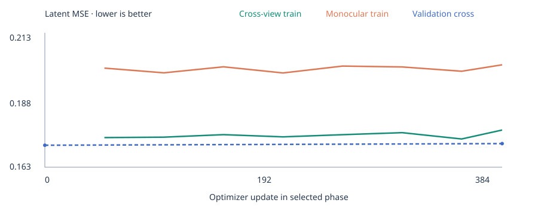
- Completed updates in this phase
- 384
- Training rooms
- 2048 sampled / 2048 configured
- Target exposures in this phase
- 6144
- Initialization
- Audited commercial-compatible lineage; parent provenance retained.
- Camera conditioning
- Camera output measurements appear in the capability table. Image-grid RoPE itself is not a calibrated 3D camera encoding.
Verified training stages: 384 updates with full encoder trainable (steps 1-384). Logged encoder gradient counts are checked against each stage. These counts describe optimization, not evidence of improved transfer.
Training efficiency
10.1 command minutes · 57.17 Wh observed board energy · 33.50 J per logged target · 99.8% telemetry coverage.
Device-wide board power/utilization, including shared desktop load; observed intervals only, gaps over 5 seconds excluded. Process memory is separately attributed. Stage timing excludes first 10 updates when at least 21 exist; energy retains command preparation and evaluation. Utilization is sample-median, not SM occupancy.
Mean observed board power 340.7 W; median device activity 90%; peak training-process VRAM 47.96 GiB. Activity includes shared desktop work and does not measure SM occupancy.
| Encoder stage | Median update | 95th percentile | Targets / second |
|---|---|---|---|
| 2 | 1.255 s | 1.302 s | 12.7 |
Stage 0 freezes the encoder; stage 1 adapts its final blocks; stage 2 adapts all blocks. Throughput is per-update training throughput, excluding validation/checkpoint overhead.
04 / RESEARCH BOUNDARIES
What this experiment does not establish.
- This publication binds one frozen foundation checkpoint and one final attached-head training run. Head weight hashes, optimizer records, native validation predictions and training logs are pinned separately. It does not compare separately trained private model versions.
- The 800-update head phase uses 32 training rooms and 8 disjoint validation rooms from existing synthetic data, with one seed. These are development cohorts previously used by the foundation study, not a fresh generalization test. The final checkpoint is fixed by the schedule, not chosen on validation performance.
- Numerical head stability passed, but camera generalization is poor: training camera regression loss 0.000131 versus validation 0.387406; validation rotation 11.64 degrees, translation direction 32.68 degrees and focal relative error 44.35%. The calibration head is not deployment-ready.
- The camera head uses dense target/reference RGB pair features. RGB completion uses only sparse target and reference information. A centered principal point is assumed; translation scale is not predicted. No camera labels enter either inference path.
- RGB PSNR uses hidden sRGB pixels in [0,1] and averages per-target PSNR. It is separate from feature signal/error dB. The same RGB decoder scores the cross-view and monocular routes. PSNR gains do not establish sharp details, geometric consistency or real-scene completion quality.
- The latent gallery and external correspondence/solver results describe the unchanged foundation checkpoint. Attached-head metrics use a separate explicitly labeled 24-target cohort. Legacy calibrated RANSAC results use known intrinsics and are not measurements of the learned calibration head.
- The training curve and board-efficiency panel describe the historical foundation phase. The attached heads train on CPU in 66.44 seconds total; frozen GPU feature export takes 44.99 seconds under the old remaining allowance. Desktop GPU activity is included in board observations. No process-attributed power claim.
- A legacy assessment provenance flag incorrectly said geometry_training_supervision=false. Foundation training used renderer-supervised correspondence. The preserved training configuration and label-cache records are authoritative; the later exporter correction passed exact replay.
- Encoder/fusion joint training with these output heads has not been qualified. Camera intrinsics generalization, additional seeds, larger datasets, strict numerical reference-order invariance, independent real data and matched public baselines remain open. SOTA and blur resolution are not established.
- No noncommercial pretrained weights or teachers enter this lineage. Depth and other future heads remain untrained. Earlier recorded failed gates and numerical/exporter limitations are not waived by this head study.
05 / TECHNICAL REPORT
burn_gekko: Stable Output Heads, Measured Limitations
The paper, figures and page are generated from the same checked experiment manifest. The PDF records architecture, dataset and training provenance, absolute metrics, visual examples and limitations. It is a technical draft, with no venue or peer-review claim.
Experiment TOML · Bundle checksums · Sample selection · Color projection